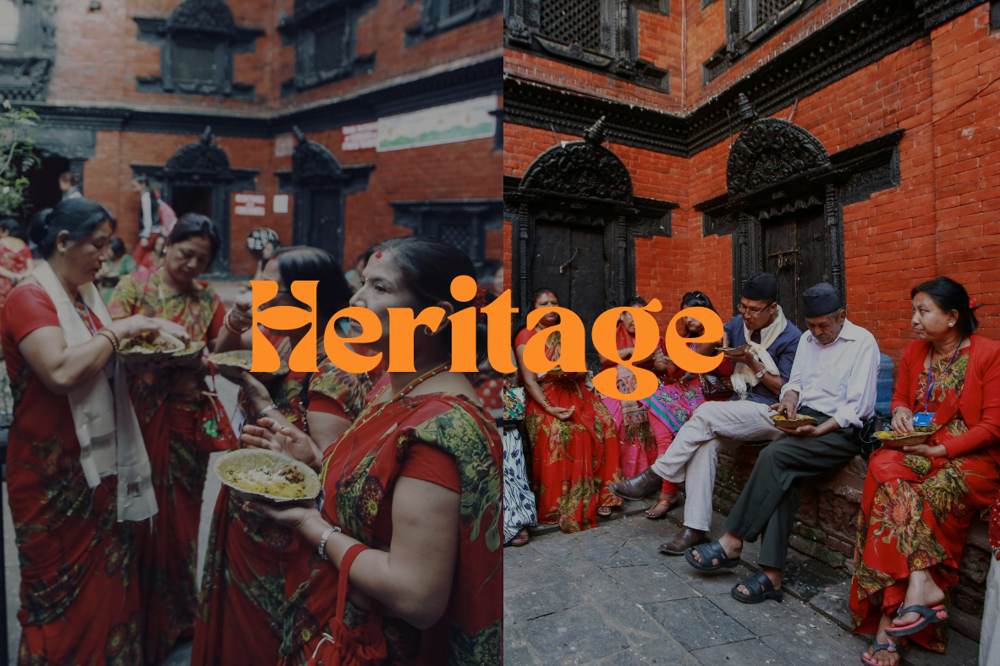
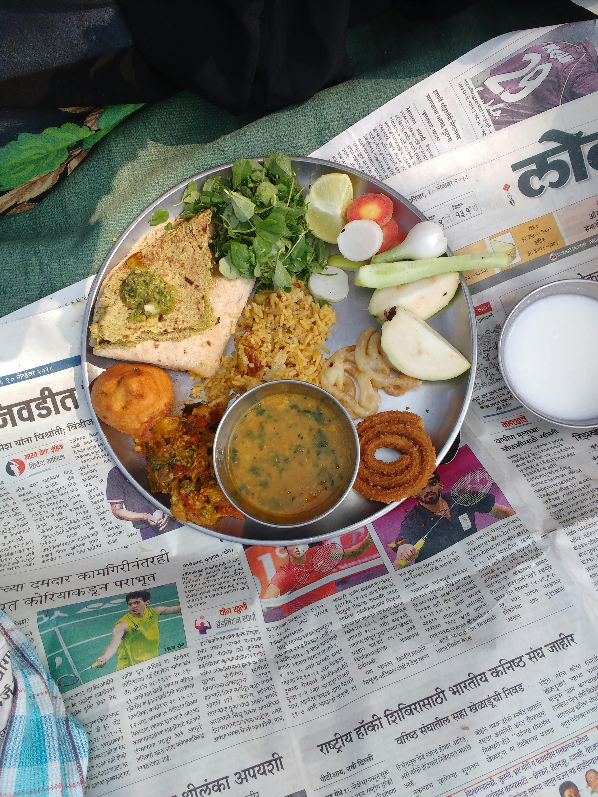

North Indian cuisine is a rich blend of indigenous traditions
and foreign influences that evolved over centuries. The region's fertile plains
provided the basis for a diet rich in grains, vegetables, and dairy, while
ancient Indian practices introduced the use of spices and herbs. The Mughal Empire
brought significant Central Asian and Middle Eastern influences, introducing dishes
like biryani and kebabs. Over time, the cuisine absorbed local flavors and techniques,
such as using tandoors for baking and grilling. Today, North Indian food reflects a
vibrant history, combining diverse elements into a deeply rooted culinary tradition.
North Indian meals often feature a variety of dishes on one plate, reflecting the region's emphasis on balance, diversity, and communal dining. Each component—ranging from breads and curries to pickles and sweets—offers a unique flavor, texture, and nutritional benefit, creating a harmonious and satisfying meal.
North Indian meals often feature a variety of dishes on one plate, reflecting the region's emphasis on balance, diversity, and communal dining. Each component—ranging from breads and curries to pickles and sweets—offers a unique flavor, texture, and nutritional benefit, creating a harmonious and satisfying meal.

Maintaining the heritage of North Indian cooking is vital for young North Indians
living elsewhere, as it serves as a tangible link to their cultural roots and family
traditions. For teens, students, and young adults, incorporating these simple recipes
into daily life is an easy way to stay connected to their heritage, offering a sense
of identity and belonging even when far from home.
These dishes, often passed down through generations, are not just about food—they carry
stories, memories, and values that help preserve cultural continuity.